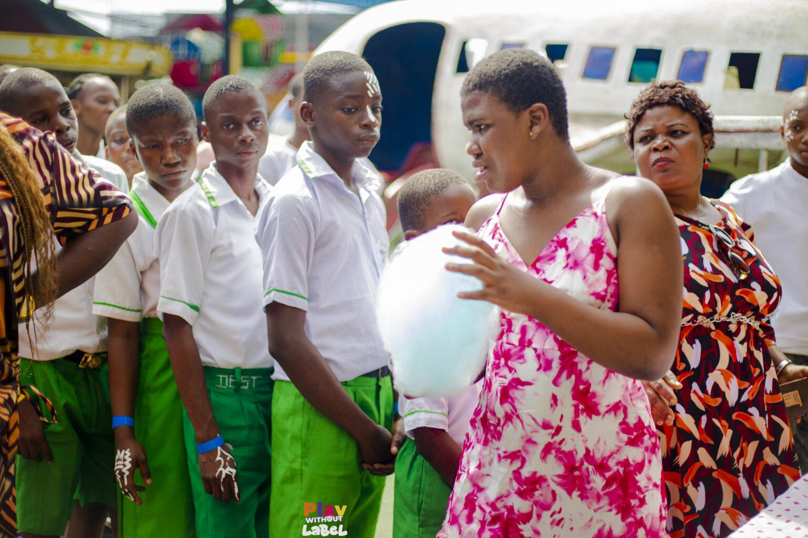

Beyond Labels Initiative

Many children with autism are misunderstood long before they are supported. Beyond Labels takes clear, kind information about autism into schools, churches and communities, so teachers, neighbours and classmates respond with understanding instead of stigma.
- Autism awareness sessions for schools and teachers
- Community and faith-group outreach
- Inclusive events like Play Without Label